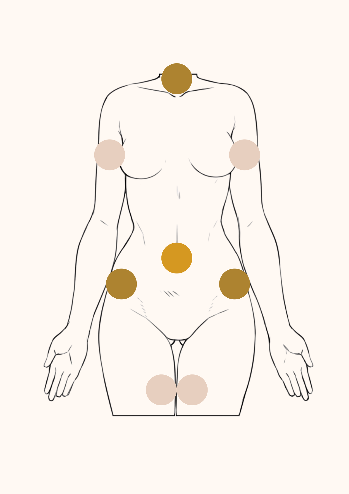

O Aqualyx é um tratamento não cirúrgico desenvolvido para a eliminação segura e eficaz de pequenas zonas de gordura localizada que resistem à dieta e exercício. É especialmente popular para áreas como o duplo queixo, braços, flancos, abdómen e coxas.
A substância ativa no Aqualyx é o ácido desoxicólico, um composto natural produzido pelo nosso organismo, responsável por ajudar a digerir e eliminar gordura. Quando injetado diretamente nas células adiposas (gordura), o ácido desoxicólico destrói a membrana dessas células, fazendo com que a gordura seja libertada e, posteriormente, eliminada naturalmente pelo sistema linfático e pelo metabolismo do corpo.
O Aqualyx é apropriado e aprovado para uso médico, com protocolos rigorosos que garantem a segurança do paciente.
Ao contrário de tratamentos invasivos, não há necessidade de anestesia geral, incisões ou tempo de recuperação prolongado.
Os efeitos secundários mais comuns são temporários e ligeiros, como vermelhidão, inchaço ou sensibilidade local, geralmente a desaparecer em poucos dias.
Numerosos estudos científicos validam a eficácia do ácido desoxicólico para a redução de gordura localizada:
Estes dados confirmam que o Aqualyx é uma solução médica válida, segura e eficaz para quem procura contornar gordura localizada sem cirurgia.